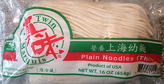
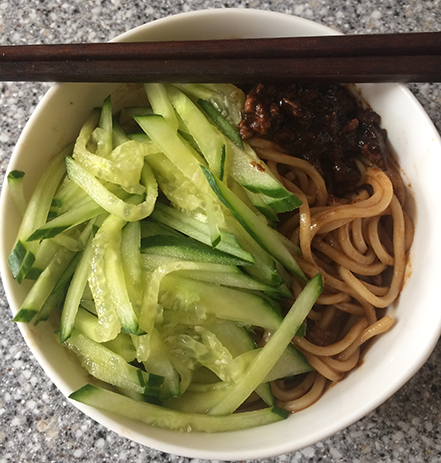

Ok, so I realize that everything in my DIY section requires access to $60k things and isn't cheap. So here's a guide to making zhajiangmian because I have a rule when I go out to eat. The short version is that I don't order anything that I could have made.
(This is a problem when you start cooking and realizing that a lot of things are pretty easy to make. Soln: don't cook or be a bad one.)
Anyways, ZhaJiangMian (literally fried sauce noodles) is one of those things I can't spend money on. I can't spend $8 for a bowl because it takes like 5 minutes to prep, 5 minutes to cook, $5 to make enough for a week, and is basically impossible to screw up...which means buying a bowl is least 4x its actual value. It's great for if you're lazy, hungry, poor and hungry (all noodles–that cucumber is about the price of a bag of noodles!), hungry and dieting (no noodles, lots of cucumber), or not hungry (I'll eat it for you).
For my non-Asian friends, I've got pictures so you can make it yourself. Just take show somebody at the Asian grocery store the ingredients on your phone...haha I've def ordered food this way before. This tasted great the first time I made it, which means that you can def do it too...assuming I haven't screwed up the instructions.
We always use this brand of noodles. They're mad cheap.
The best thing about zhajiangmian is that the measurements don't have to be precise. You know it's authentic when you don't have measurements).
Before all this is happening, boil water for noodles. Cook Noodles. Don't be blasphemous and overcook your noodles.
Boom. 5 minutes. Food for a week.
This sauce will stay good for days, easily over a week. Don't ask me how I know this. Don't ask how much sodium is in it. Just microwave it and enjoy the sodium.
Thanks Mom.
{kind=link}
{kind=link}
{kind=link}